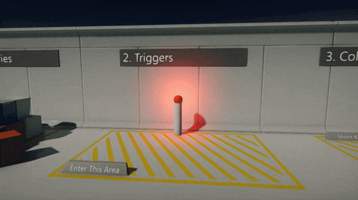
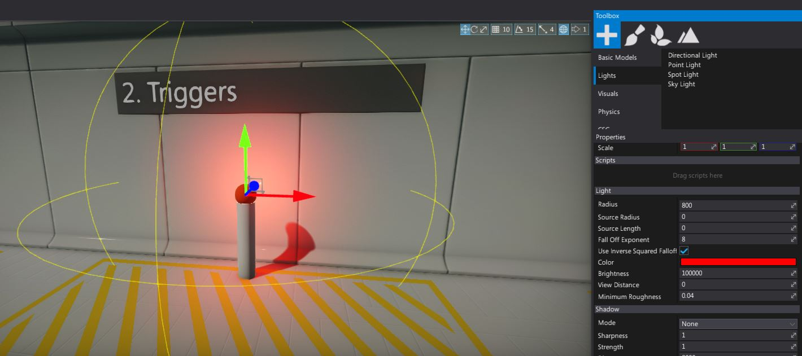
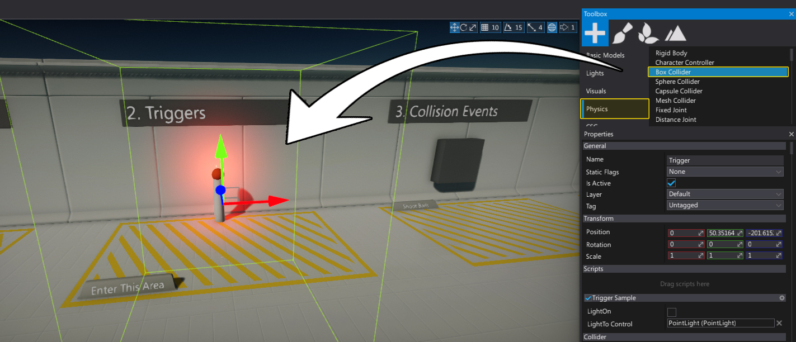
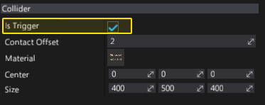
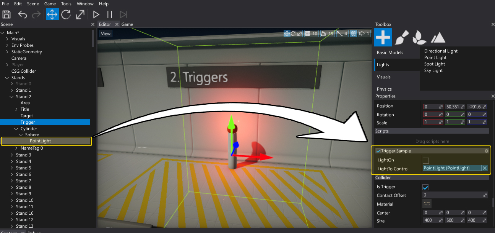

HOWTO: Use a trigger

In this tutorial you will learn how to create and use a box trigger to switch the light color if players enters the trigger area.
See Triggers page to learn more about triggers.
1. Create a light
Firstly we need to spawn a point light (it can be other type of light) and place it somewhere in the level near the trigger. So player can see the light color change.

2. Create a collider
Drag and drop the Box Collider from the Toolbox window (Physics section) and adjust it's shape to match the desired area.

3. Check Is Trigger
Created Box Collider will block objects and generate collisions. We want to just get the event from the other objects entering this volume so set the Is Trigger flag to true.

4. Create a script
Next step is to write a C# script (name it TriggerSample). It will handle the trigger event and implement the desired logic. To learn more about creating scripts see this page.
public class TriggerSample : Script
{
[Serialize]
private bool _lightOn;
public Light LightToControl;
[NoSerialize]
public bool LightOn
{
get { return _lightOn; }
set
{
_lightOn = value;
if (LightToControl)
LightToControl.Color = value ? Color.Green : Color.Red;
}
}
public override void OnStart()
{
// Restore state
LightOn = _lightOn;
}
public override void OnEnable()
{
// Register for event
Actor.As<Collider>().TriggerEnter += OnTriggerEnter;
Actor.As<Collider>().TriggerExit += OnTriggerExit;
}
public override void OnDisable()
{
// Unregister for event
Actor.As<Collider>().TriggerEnter -= OnTriggerEnter;
Actor.As<Collider>().TriggerExit -= OnTriggerExit;
}
void OnTriggerEnter(PhysicsColliderActor collider)
{
// Check for player
if (collider is CharacterController)
{
LightOn = true;
}
}
void OnTriggerExit(PhysicsColliderActor collider)
{
// Check for player
if (collider is CharacterController)
{
LightOn = false;
}
}
}
5. Setup a script
Add a script to the created Box Collider and attach a reference to the light (edit LightToControl property). You can also test if it works by using the LightOn checkbox.

6. Test it out!
Hit Play button and enter you player character right into the trigger to see the light changing its color.